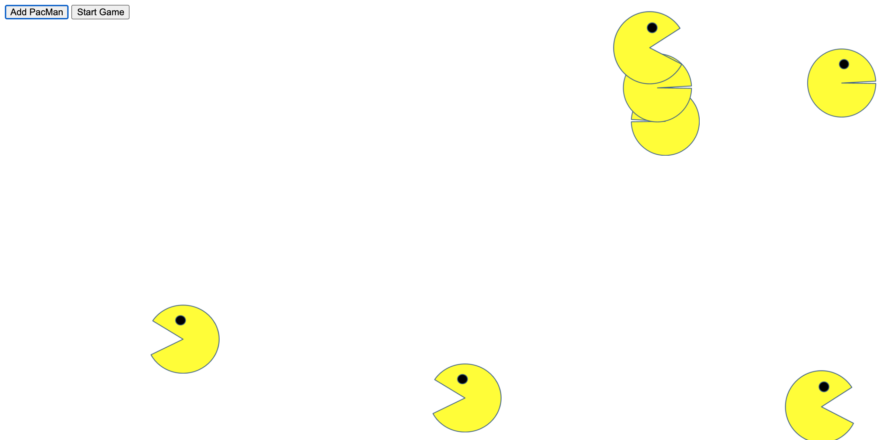
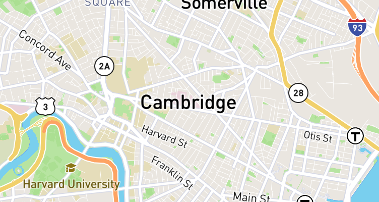

PacMan Recreated
This is a basic PacMan re-creation. Potentially infinite PacMan images are added to the page via button click. Once 'Start Game' is clicked, the pacman move in random directions at random velocities. They also flap their mouths.

Moving Eyes Exercise
This site tracks the mouse movements with moving eyes for great effect. Provides inspiration for responding to users with reactive front-end designs.

Real Time Bus Tracker
This project tracks the MBTA bus 1 in real-time. The backdrop color changes to indicate that the position has been updated every 15 seconds. More detailed research into the MBTA API could offer expanded future functionality.